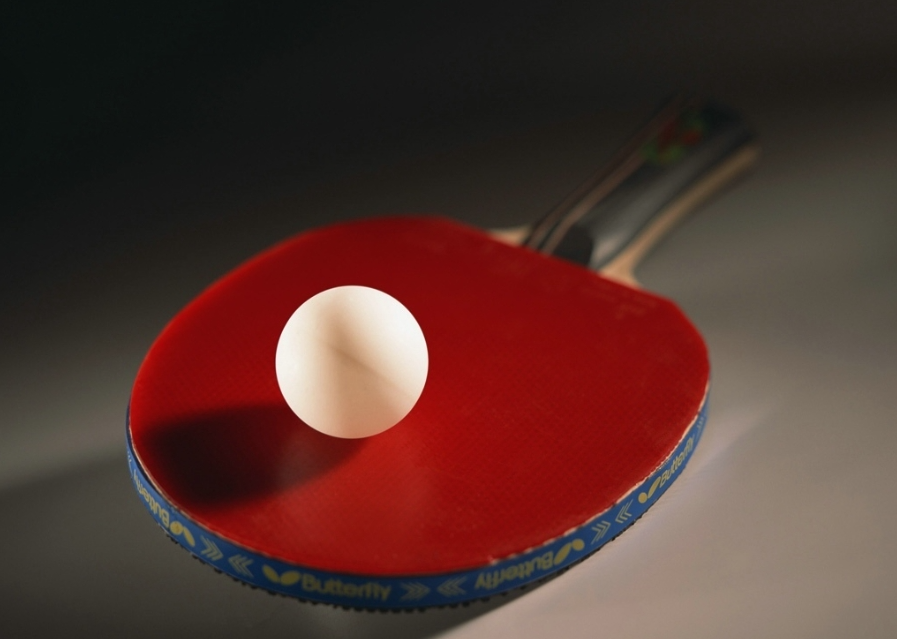
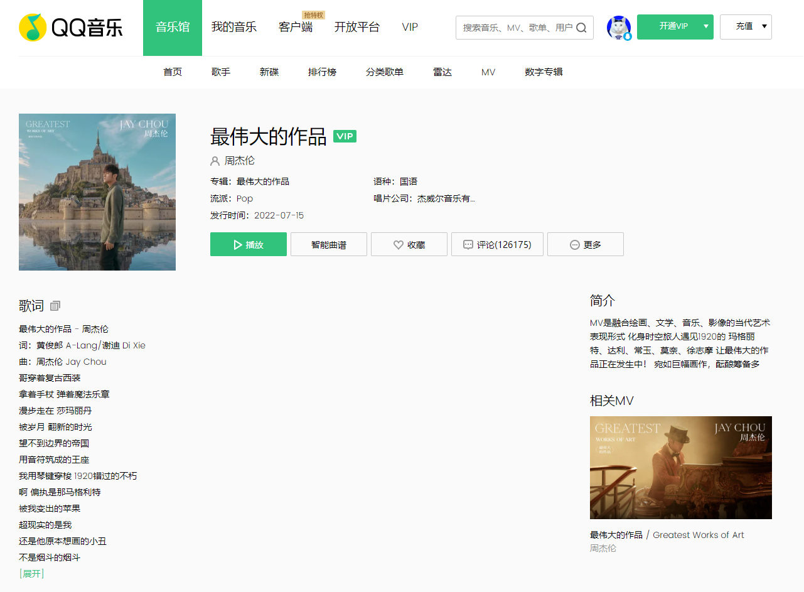
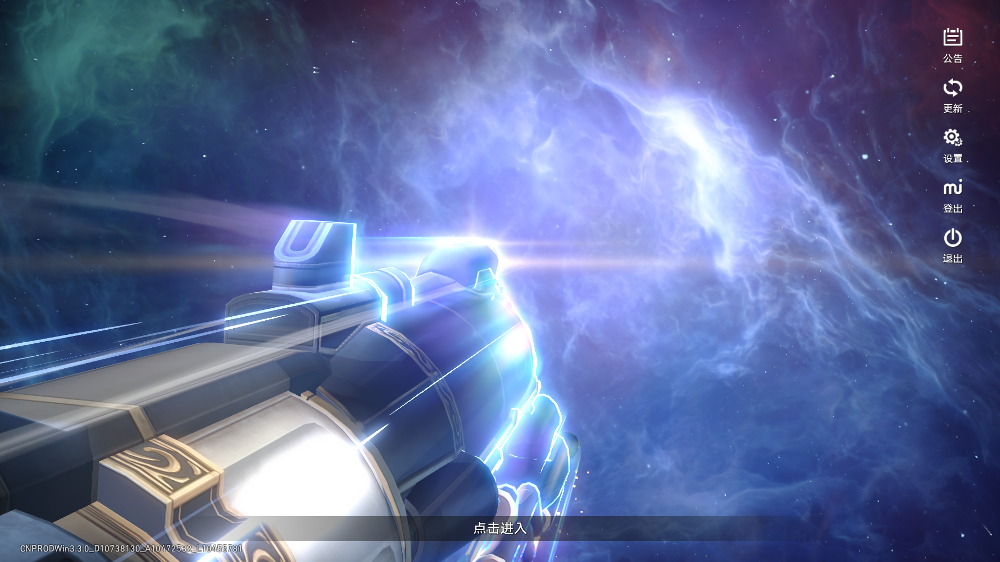

我的爱好
乒乓球
乒乓球是我最喜欢的运动，从初中开始就坚持每周打球。这项运动不仅能锻炼身体，还能培养快速反应能力。
在校期间，我加入了学校的乒乓球社团，每周都会参加训练，享受这项运动带来的乐趣。
| 打球频率 | 每周2-3次 |
|---|---|
| 打球地点 | 学校体育馆、宜城市体育馆 |
| 最喜欢的球员 | 马龙 |

听音乐
音乐是我生活中不可或缺的一部分，特别是在学习或编程时，我喜欢听一些轻音乐或流行歌曲。
我最喜欢的音乐类型是流行和轻音乐，最喜欢的歌手是周杰伦和林俊杰。他们的歌曲陪伴我度过了许多学习时光。
| 常听类型 | 流行、轻音乐 |
|---|---|
| 最喜欢的歌手 | 周杰伦、林俊杰 |
| 常用平台 | 网易云音乐、QQ音乐 |

打游戏
在课余时间，我也喜欢玩一些游戏来放松心情。我主要玩一些策略类和竞技类游戏。
我认为适度游戏可以锻炼思维能力和团队协作能力，但我很注意控制游戏时间，确保不影响学习和生活。
| 游戏类型 | 策略类、竞技类 |
|---|---|
| 常玩游戏 | 崩坏星穹铁道 |
| 游戏频率 | 每天1次，每次1-2小时 |
